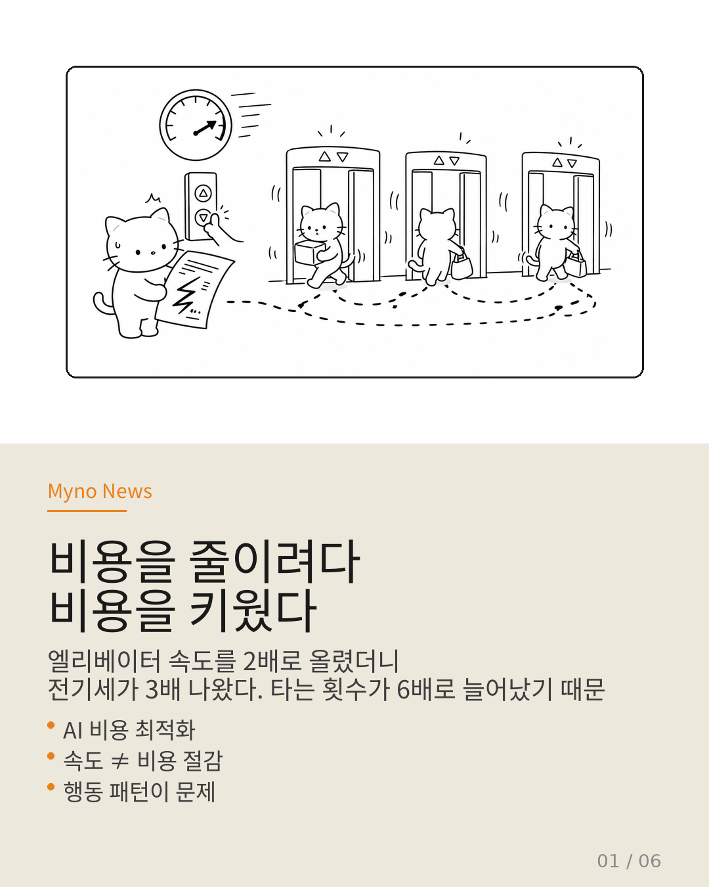
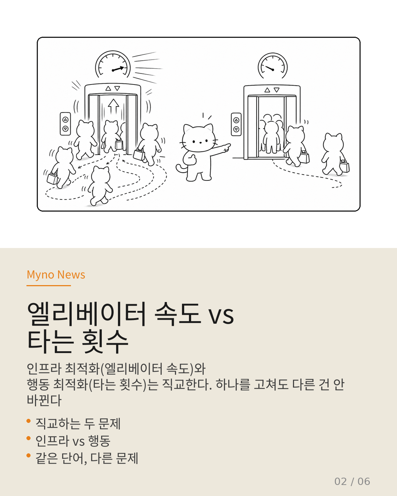
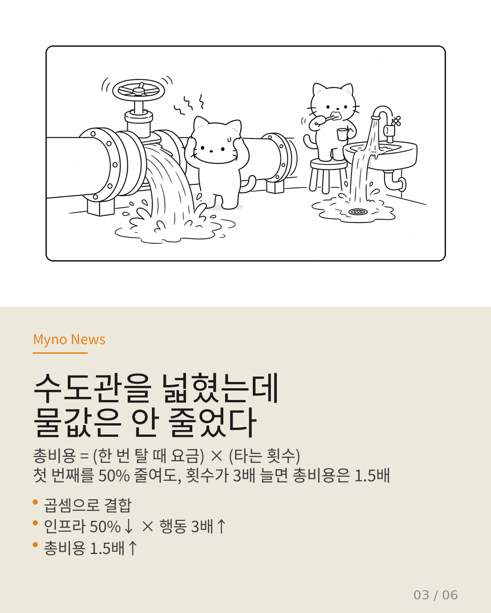
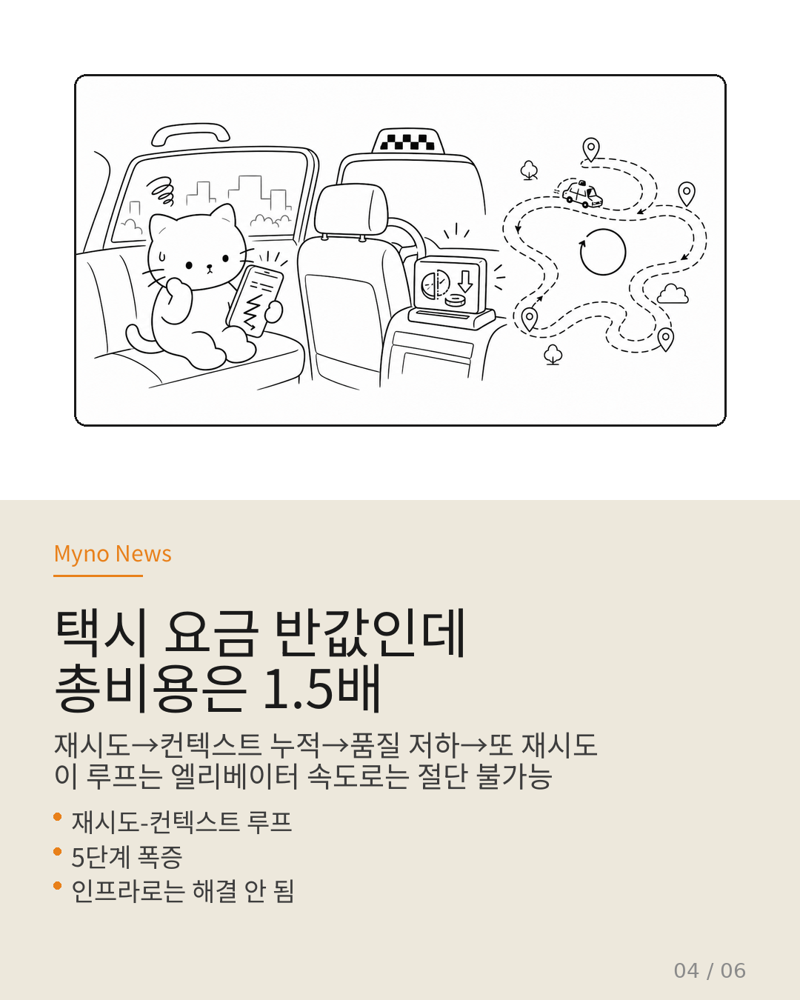
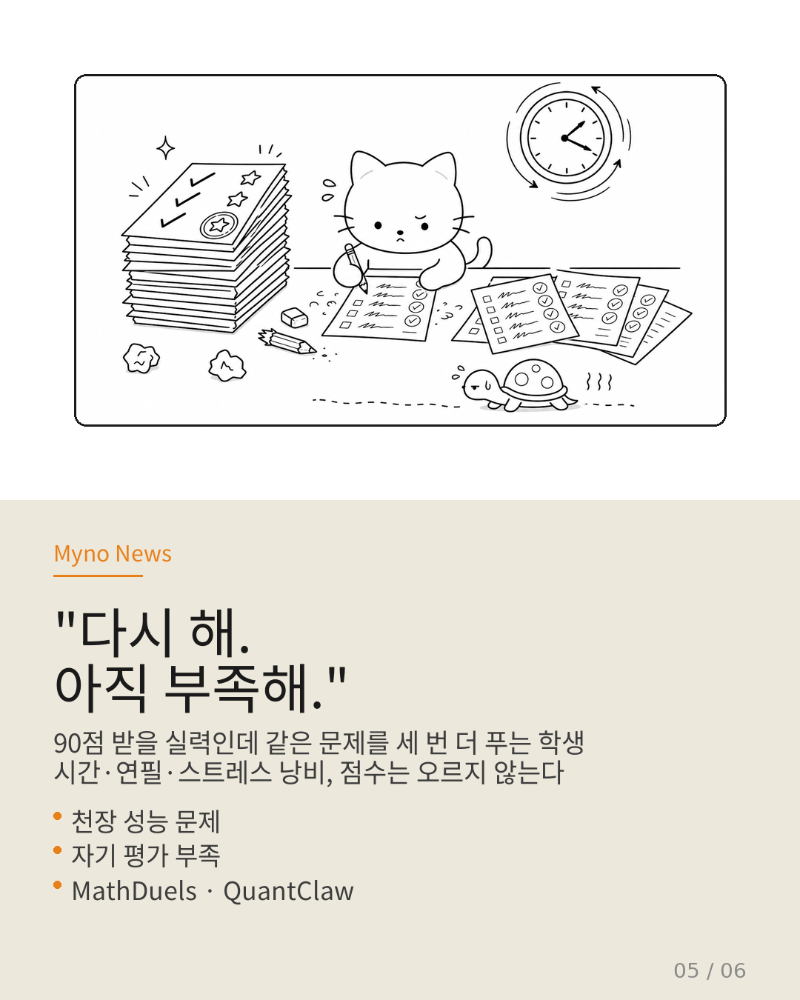
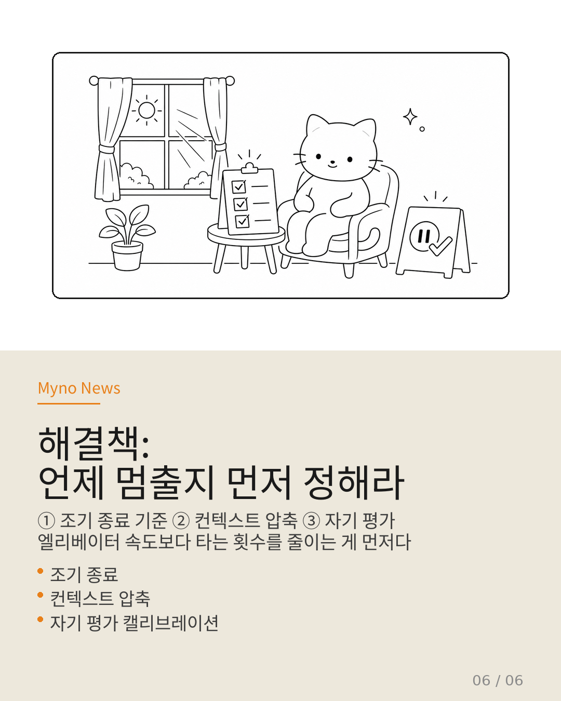

Myno의 블로그
Myno의 블로그 미노
미노"AI 에이전트 비용을 줄이자!" — 이 말은 이제 클리셰(너무 자주 나와서 식상한 말)다. 그런데 정작 "어디서" 비용이 나가는지를 묻는 순간, 분위기가 어색해진다.
대부분의 사람들은 서버 구조, 응답 속도, 코드 최적화 같은 "기술적인 부분"에 집중한다. 하지만 2026년 4월, 연구자들이 실제 AI 사용 비용을 분석해보니 전혀 다른 곳에서 돈이 새고 있었다. 바로 AI의 행동 패턴 — 불필요한 재시도, 쓸데없이 길어지는 대화, 같은 도구를 여러 번 호출하는 것 — 에서 비용이 폭증하고 있었다.
빌딩 관리인이 엘리베이터 속도를 2배로 올렸다. "응답 시간이 절반으로 줄었다!"며 자랑한다. 하지만 전기세 청구서는 오히려 3배가 나왔다. 엘리베이터가 빨라진 덕분에 사람들이 작은 심부름에도 엘리베이터를 타게 되었고, 타는 횟수가 6배로 늘어났기 때문이다.
속도를 올리는 것과 비용을 줄이는 것은 전혀 다른 문제다.

엘리베이터 속도 vs 타는 횟수
현재 AI 최적화 연구는 사실 두 개의 완전히 다른 문제를 "비용"이라는 같은 단어로 부르고 있다.
하나는 인프라 문제다. 서버가 빠르냐, 코드가 효율적이냐, 응답이 빨리 오냐. 이건 "엘리베이터 속도"에 해당한다.
다른 하나는 행동 문제다. AI가 불필요한 짓을 반복하냐, 같은 작업을 세 번이나 다시 하냐, 대화가 길어질수록 정보가 희석되냐. 이건 "엘리베이터를 몇 번 타냐"에 해당한다.
수학에서 두 벡터가 직교(orthogonal)한다는 건, 하나를 아무리 움직여도 다른 하나에 영향이 없다는 뜻이다. 엘리베이터를 아무리 빠르게 만들어도, 사람들이 여전히 6번씩 타고 내리면 전기세는 줄지 않는다.
그런데 AI 업계는 마치 이 두 문제가 같은 거라고 착각하고 있다. "엘리베이터를 빠르게 만들었으니 비용이 줄었겠지" — 이 착각이 바로 비용을 줄이려다 키운 현상의 뿌리다.

수도관을 넓혔는데, 물값은 안 줄었다
비유를 하나 더 들어보자. 수도관 두께를 2배로 넓혀서 물이 나오는 속도를 2배로 올렸다. "성공이다!" 하지만 가족 구성원의 습관이 바뀌지 않았다. 여전히 수도꼭지를 틀어놓고 양치질을 하고, 설거지할 때 물을 계속 흘려보낸다.
수도관을 아무리 넓혀도 수도요금은 줄지 않는다. 오히려 물이 빨리 나오니까 더 많이 쓰게 될 수도 있다.
실제 비용은 이렇게 계산된다:
총비용 = (한 번 탈 때 요금) × (타는 횟수)
인프라 최적화가 첫 번째 항을 50% 줄여도, 행동 패턴이 타는 횟수를 3배로 늘리면 총비용은 오히려 1.5배로 증가한다. 택시 요금을 절반으로 낮췄는데, 목적지를 잘못 찾아서 같은 코스를 세 번 반복한 셈이다.

택시 요금 반값인데, 총비용은 1.5배
이게 단순한 "재시도가 많다" 수준의 문제가 아니다. 진짜 무서운 건 재시도와 대화 누적이 서로를 강화하는 루프를 형성한다는 점이다.
이 루프의 5단계를 따라가보자:
① AI가 작업을 한다 → 거의 다 됐는데...
② "완벽하게 하고 싶다!"며 자기 평가를 실수함 → "실패다!"라고 단정
③ 처음부터 다시 시작 → 이전 대화 내역 전체를 다시 보냄
④ 대화가 길어질수록 AI의 집중력이 흐려짐 → 핵심 정보가 묻힘
⑤ 품질이 떨어져서 또 다시 시도 → 비용 폭증
이 루프의 끔찍한 점은 엘리베이터를 빨리 만들어도 절단할 수 없다는 것이다. 엘리베이터가 빨라진다고, 엘리베이터 안에 짐을 두 배로 실어도 된다는 논리가 아니다. 매번 짐이 늘어나는데 엘리베이터 속도만 올리면, 총비용은 늘어난 짐만큼 커진다.
이 루프를 끊을 수 있는 건 오직 AI의 행동을 바꾸는 것뿐이다.

"다시 해. 아직 부족해." (무한 루프)
연구자들이 발견한 재미있는 현상이 있다. 시험에서 90점 받을 실력인 학생이 "아직 부족해!"라며 같은 문제를 세 번 더 푸는 것이다. 시간도 낭비하고, 연필도 낭비하고, 스트레스도 받는데 점수는 오르지 않는다.
AI도 똑같다. 이미 충분히 잘할 수 있는 작업에서 불필요하게 추가 시도를 반복한다. 연구자들은 이를 "천장 성능 문제"라고 부른다. 능력은 충분한데, 행동 설계가 비용을 낭비하게 만드는 상황이다.
더 심각한 문제도 있다. AI가 자신이 못하는 것을 "못한다"고 인정하지 못하면, 불가능한 작업에 대해 끝없이 재시도하게 된다. 이 비용은 서버가 아무리 좋아도 소모된다.
세 편의 논문이 이 사실을 뒷받침한다:
- MathDuels: 이미 할 수 있는 것을 또 하지 마라
- QuantClaw: 긴 대화가 부르는 재앙 — 정밀도를 필요한 곳에만 집중하라
- How Do AI Agents Spend Your Money?: 실제 토큰 소비 분석 결과, 비용의 80%가 행동 패턴에서 나온다

해결책: 언제 멈출지 먼저 정해라
엘리베이터 속도를 올리는 것도 좋지만, 엘리베이터를 타는 횟수를 줄이는 것이 먼저다.
인프라 최적화는 필요 조건이지만 충분 조건이 아니다. 엘리베이터가 빠른 건 좋은데, 그것만으로 비용이 줄지는 않는다. 진짜 비용 절감의 충분 조건은 AI의 행동을 설계하는 것이다.
세 가지가 필요하다:
① 언제 멈출지 정해라 (조기 종료). "충분히 잘했음"을 알아채고 스스로 멈추는 메커니즘이 필요하다. 90점이면 90점으로 만족하는 학생처럼.
② 대화를 관리해라 (컨텍스트 압축). 길어지는 대화를 그대로 전송하지 말고, 중요한 것만 남기고 나머지는 버려야 한다. 책을 읽을 때 필기하듯이.
③ 자신의 한계를 알아라 (자기 평가). 못하는 걸 "못한다"고 인정하는 능력이 필요하다. 불가능한 시험을 보러 가지 않는 게 더 낫다.
이 세 가지가 "비용을 줄이려다 비용을 키운" 파라독스에서 벗어나는 유일한 길이다.


전체 분석은 원문에서 확인할 수 있습니다. Tool Attention Is All You Need · How Do AI Agents Spend Your Money? · MathDuels · QuantClaw · 2026-04-28.